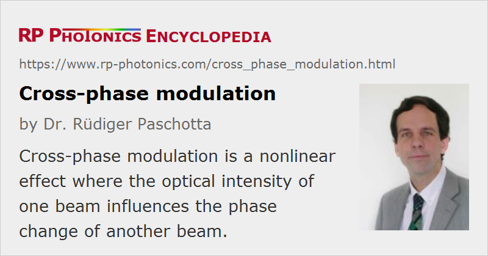

Cross-phase Modulation
Acronym: XPM
Definition: a nonlinear effect where the optical intensity of one beam influences the phase change of another beam
Opposite term: self-phase modulation
German: Kreuzphasenmodulation
How to cite the article; suggest additional literature
Author: Dr. Rüdiger Paschotta
Cross-phase modulation is the change in the optical phase of a light beam caused by the interaction with another beam in a nonlinear medium, specifically a Kerr medium. This can be described as a change in the refractive index:
where n2 is the nonlinear index. Here, the intensity I(1) of beam 1 causes a refractive index change for beam 2.
Compared with the corresponding equation for self-phase modulation, there is an additional factor of 2. This factor 2 is valid for beams with the same polarization; for cross-polarized beams in isotropic media (e.g. glasses), it must be replaced with 2/3.
A more fundamental description of cross-phase modulation effects refers to the nonlinear polarization caused in the medium, based on the χ(3) nonlinearity. For example, the above-mentioned factor 2 can be understood on that basis.
Effects of Cross-phase Modulation
Cross-phase modulation can be relevant under different circumstances:
- It leads to an interaction of laser pulses in a medium, which allows e.g. the measurement of the optical intensity of one pulse by monitoring a phase change of the other one (without absorbing any photons of the first beam). This is basis of a scheme for quantum nondemolition (QND) measurements.
- The effect can also be used for synchronizing two mode-locked lasers using the same gain medium, in which the pulses overlap and experience cross-phase modulation.
- In optical fiber communications, cross-phase modulation in fibers can lead to problems with channel cross-talk.
- Cross-phase modulation is also sometimes mentioned as a mechanism for channel translation (wavelength conversion), but in this context the term typically refers to a kind of cross-phase modulation which is not based on the Kerr effect, but rather on changes in the refractive index via the carrier density in a semiconductor optical amplifier.
Questions and Comments from Users
Here you can submit questions and comments. As far as they get accepted by the author, they will appear above this paragraph together with the author’s answer. The author will decide on acceptance based on certain criteria. Essentially, the issue must be of sufficiently broad interest.
Please do not enter personal data here; we would otherwise delete it soon. (See also our privacy declaration.) If you wish to receive personal feedback or consultancy from the author, please contact him e.g. via e-mail.
By submitting the information, you give your consent to the potential publication of your inputs on our website according to our rules. (If you later retract your consent, we will delete those inputs.) As your inputs are first reviewed by the author, they may be published with some delay.
Bibliography
| [1] | M. N. Islam et al., “Cross-phase modulation in optical fibers”, Opt. Lett. 12 (8), 625 (1987), doi:10.1364/OL.12.000625 |
| [2] | M. Shtaif, “Analytical description of cross-phase modulation in dispersive optical fibers”, Opt. Lett. 23 (15), 1191 (1998), doi:10.1364/OL.23.001191 |
| [3] | A. Fellegara and S. Wabnitz, “Electrostrictive cross-phase modulation of periodic pulse trains in optical fibers”, Opt. Lett. 23 (17), 1357 (1998), doi:10.1364/OL.23.001357 |
| [4] | M. Margalit et al., “Cross phase modulation squeezing in optical fibers”, Opt. Express 2 (3), 72 (1998), doi:10.1364/OE.2.000072 |
| [5] | N. Matsuda et al., “Observation of optical-fibre Kerr nonlinearity at the single-photon levels”, Nature Photon. 3, 95 (2009), doi:10.1038/nphoton.2008.292 |
| [6] | G. P. Agrawal, Nonlinear Fiber Optics, 4th edn., Academic Press, New York (2007) |
| [7] | R. Paschotta, tutorial on "Passive Fiber Optics", Part 11: Nonlinearities of Fibers |
See also: Kerr effect, self-phase modulation, The Photonics Spotlight 2008-02-12
and other articles in the category nonlinear optics
|  |
If you like this page, please share the link with your friends and colleagues, e.g. via social media:
These sharing buttons are implemented in a privacy-friendly way!